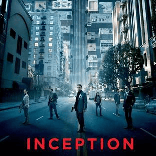
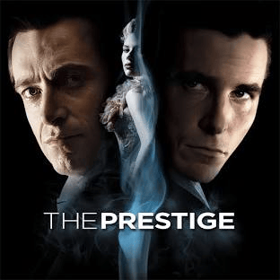
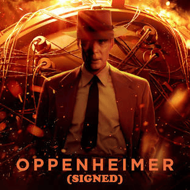
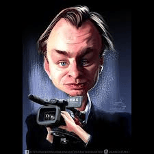

.png)
Christopher Nolan is a highly acclaimed British-American film director, producer, and screenwriter known for creating intelligent, visually striking, and thought-provoking films. He is widely recognized for his unique storytelling style, often exploring complex themes such as time, memory, reality, and human emotion. Nolan gained global fame through movies like Inception, Interstellar, and The Dark Knight, which combine deep narratives with stunning visuals. His films often challenge the audience to think deeply and interpret multiple layers of meaning. Over the years, he has become one of the most influential filmmakers in modern cinema, known for pushing the boundaries of storytelling and filmmaking techniques.

Even he directed few films but the effects of his films are very huge .
hristopher Nolan is known for a distinctive filmmaking style that combines complex storytelling with powerful visuals. One of his most defining features is the use of non-linear narratives, where events are not shown in a simple chronological order. This can be seen clearly in Inception, where multiple layers of dreams unfold at the same time, and in Memento, where the story is told in reverse. Another key element of his style is his focus on time as a central theme. Nolan often explores how time can be experienced differently, such as in Interstellar, where time dilation plays a major role in the story. He is also known for using practical effects instead of heavy CGI, making scenes feel more realistic and immersive. For example, in The Dark Knight, many action sequences were filmed using real stunts and minimal digital effects. Nolan’s films also feature strong sound design and music, often working with composer Hans Zimmer to create intense and memorable soundtracks that enhance the emotional impact of the scenes. Overall, his films are not just meant to entertain but to challenge the audience intellectually, making viewers think deeply about reality, memory, and human perception.
I like Christopher Nolan because his movies are different from typical films and make me think deeply. His stories are not simple—they challenge the audience and often have unexpected twists. I also enjoy the way he presents concepts like time and reality in movies such as Inception and Interstellar. His films feel realistic and immersive, and they stay in my mind even after watching.



hristopher Nolan is one of the most influential directors in modern cinema. His films stand out for their unique storytelling, complex ideas, and powerful visuals. He has changed the way audiences experience movies by making them think deeply about time, reality, and human emotions. Through films like Inception and Interstellar, he has created a lasting impact on the film industry. His work continues to inspire and entertain audiences around the world.